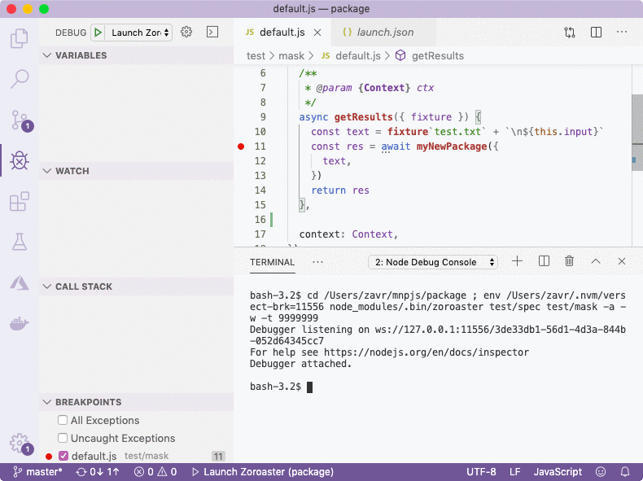

##! Debugging

Debugging is an very important process and must be approached seriously. Professional software engineers always debug their programs with a debugger, rather than by leaving *console.log* statements as it saves a lot of time and allows to set through code line by line observing changes to variables.

To start debugging, we need an entry point, i.e. a program that is using our written source code. There are 2 candidates for this: either tests, or examples. The best IDE for debugging is _VS Code_ that allows to open file being debugged in write-mode, and make changes on-the-fly. Therefore, we've included the configuration necessary for debugging in _VS Code_ called *launch.json* and it's found in the `.vscode` folder. Don't be afraid to create as many records in the configs as you need, and commit them to remote repository. Configs are free and even if you and members of your team don't use same configs, it's better to still have them rather than having to create new ones each time because they were not committed to source control.

```json
{
  {
    "type": "node",
    "request": "launch",
    "name": "Launch Zoroaster",
    "program": "${workspaceFolder}/node_modules/.bin/zoroaster",
    "env": {
      // "NODE_DEBUG": "my-new-package",
    },
    "console": "integratedTerminal",
    "args": [
      "test/spec",
      "test/mask",
      "-a", "-w", "-t", "9999999"
    ],
    "skipFiles": [
      "<node_internals>/**/*.js"
    ]
  },
  {
    "type": "node",
    "request": "launch",
    "name": "Launch Example",
    "program": "${workspaceFolder}/node_modules/.bin/alanode",
    "console": "integratedTerminal",
    "args": [
      "example"
    ],
    "skipFiles": [
      "<node_internals>/**/*.js"
    ]
  }
}

```

The configurations will launch either *zoroaster* or *alanode* binaries. By skipping node internals, we won't be jumping into Node's own source code, like `fs.createReadStream('path')` or async hooks that are executed after async operations. _ÀLaNode_ is a simple binary that calls the ÀLaMode require hook to enable transpilation of modules. You can also call it directly like `yarn alanode example/src.js` to run examples or any scripts that you have.

Using _VS Code_ interface, we set breakpoints by clicking on the line where we want to stop, either in the source code or in tests/examples. It's also possible to simply write *debugger* statement in code manually. Then we launch the compiler (F5) which will pause at the breakpoint. We can then hover over variable names, and observe their values and call stack on the left. _Zoroaster_ will be started in watch mode, so that every change will rerun tests (you'll need to unpause the debugger first if it paused on a breakpoint) without having to restart the debugger.

<p>
  
</p>

<section-break />